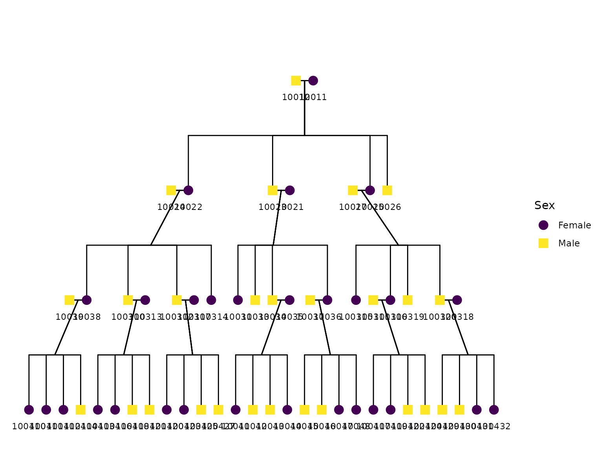
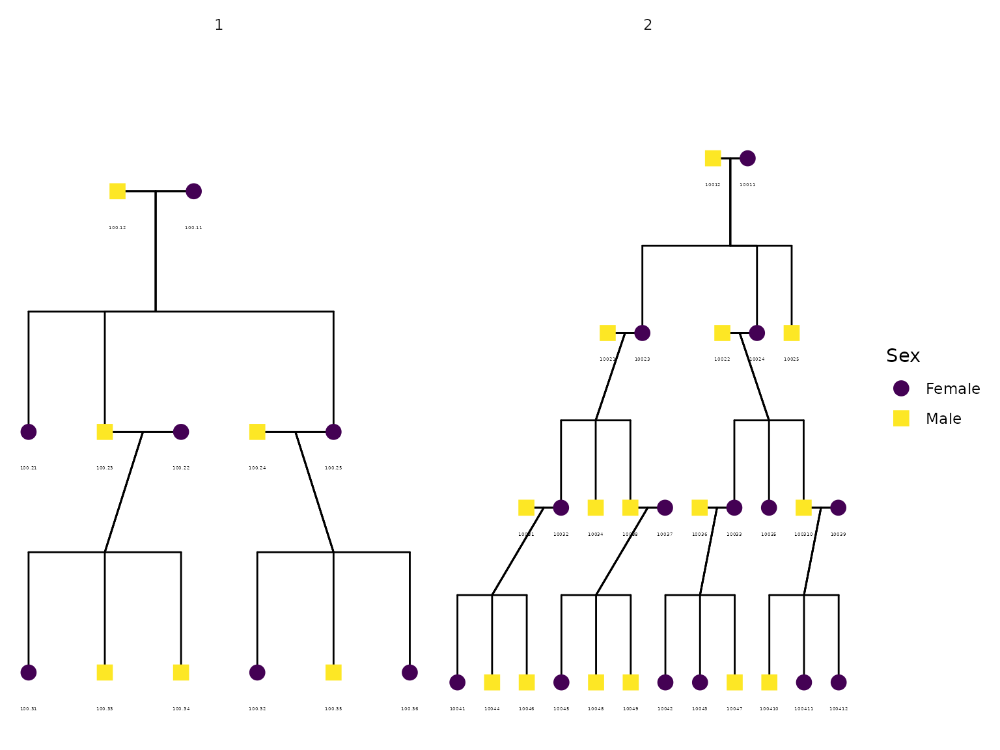

Introduction
Unlike Tolstoy, where only happy families are alike, all
pedigrees are alike – or at least, all simulated pedigrees are alike.
The simulatePedigree function generates a pedigree with a
user-specified number of generations and individuals per generation.
This function provides users the opportunity to test family models in
pedigrees with a customized pedigree length and width.
These pedigrees can be simulated as a function of several parameters, including the number of children per mate, generations, sex ratio of newborns, and mating rate. Given that large family pedigrees are difficult to collect or access, simulated pedigrees serve as an efficient tool for researchers. These simulated pedigrees are useful for building family-based statistical models, and evaluating their statistical properties, such as power, bias, and computational efficiency.
To illustrate this functionality, let us generate a pedigree. This
pedigree has a total of four generations (Ngen), in which
each person who “mates”, grows a family with four offspring
(kpc). In our scenario, the number of male and female
newborns is equal, but can be adjusted via (sexR). In this
illustration 70% of individuals will mate and bear offspring
(marR). Such a pedigree structure can be simulated by
running the following code:
## Loading Required Libraries
library(BGmisc)
library(ggpedigree)
set.seed(5)
df_ped <- simulatePedigree(
kpc = 4,
Ngen = 4,
sexR = .5,
marR = .7
)
summary(df_ped)
#> fam ID gen dadID
#> Length:57 Min. : 10011 Min. :1.000 Min. : 10012
#> Class :character 1st Qu.: 10036 1st Qu.:3.000 1st Qu.: 10024
#> Mode :character Median :100312 Median :3.000 Median : 10037
#> Mean : 59171 Mean :3.298 Mean : 42859
#> 3rd Qu.:100416 3rd Qu.:4.000 3rd Qu.:100311
#> Max. :100432 Max. :4.000 Max. :100320
#> NA's :13
#> momID spID sex
#> Min. : 10011 Min. : 10011 Length:57
#> 1st Qu.: 10022 1st Qu.: 10025 Class :character
#> Median : 10036 Median : 10036 Mode :character
#> Mean : 42859 Mean : 40124
#> 3rd Qu.:100316 3rd Qu.:100311
#> Max. :100318 Max. :100320
#> NA's :13 NA's :33The simulation output is a data.frame with 57 rows and 7
columns. Each row corresponds to a simulated individual.
df_ped[21, ]
#> fam ID gen dadID momID spID sex
#> 21 fam 1 100312 3 10024 10022 100317 MThe columns represents the individual’s family ID, the individual’s personal ID, the generation the individual is in, the IDs of their father and mother, the ID of their spouse, and the biological sex of the individual, respectively.
Summarizing Pedigrees
summarizeFamilies(df_ped, famID = "fam")$family_summary
#> fam count gen_mean gen_median gen_min gen_max gen_sd spID_mean
#> <char> <int> <num> <num> <num> <num> <num> <num>
#> 1: fam 1 57 3.298246 3 1 4 0.8229935 40123.5
#> spID_median spID_min spID_max spID_sd
#> <num> <num> <num> <num>
#> 1: 10035.5 10011 100320 43476.96Plotting Pedigree
Pedigrees are visual diagrams that represent family relationships
across generations. They are commonly used in genetics to trace the
inheritance of specific traits or conditions. This vignette will guide
you through visualizing simulated pedigrees using the
plotPedigree function. This function is a wrapper function
for Kinship2’s base R plotting. The sister package
ggpedigree has a much nicer plotting function. It’s also available on
CRAN, but it is not a dependency of BGmisc. If you want to use
ggpedigree, you can install it with
install.packages("ggpedigree") and then use
ggplot2 syntax to plot pedigrees.
Single Pedigree Visualization
To visualize a single simulated pedigree, use the the
plotPedigree function allows you to visualize the pedigree
structure, including family relationships and individual
characteristics. The plot displays individuals across generations, with
lines connecting parents to their children, and spouses connected by
horizontal lines.
library(ggpedigree)
df_ped_recoded <- recodeSex(df_ped, code_male = "M", recode_male = 1, recode_female = 0)
ggpedigree::ggpedigree(df_ped_recoded,
personID = "ID",
code_male = 1
)
In the resulting plot, biological males are represented by squares, while biological females are represented by circles, following the standard pedigree conventions.
Visualizing Multiple Pedigrees Side-by-Side
If you wish to compare different pedigrees side by side, you can plot them together. For instance, let’s visualize pedigrees for families spanning three and four generations, respectively.
set.seed(8)
# Simulate a family with 3 generations
df_ped_3 <- simulatePedigree(Ngen = 3)
# Simulate a family with 4 generations
df_ped_4 <- simulatePedigree(Ngen = 4)You can use the ggpedigree package to plot multiple
pedigrees side by side. This package allows for more customization and
better aesthetics in pedigree visualization.

By examining the side-by-side plots, you can contrast and analyze the structures of different families, tracing the inheritance of specific traits or conditions if needed.